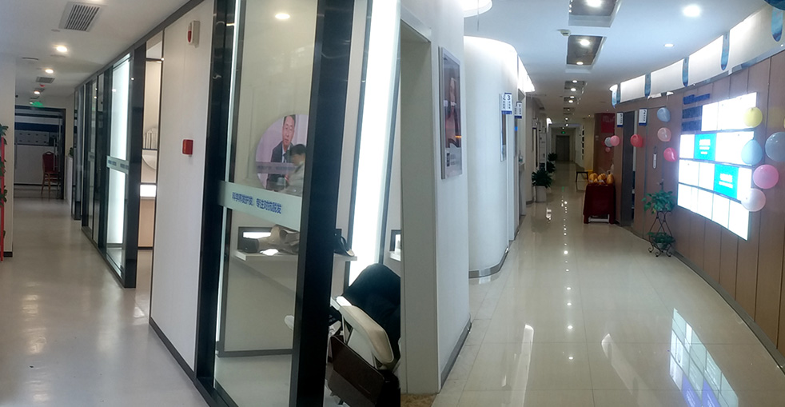

用於預防掉髮和促進頭髮生長的外用治療

米諾地爾是研究最廣泛且經證實的掉髮外用治療。經FDA核准且無須處方即可取得，它透過刺激毛囊並增加頭皮的血液供應來發揮作用。在大麥，我們提供關於正確使用米諾地爾的專業指導，做為您全面頭髮復原計畫的一部分，幫助您保存和改善頭髮。
了解此經證實治療背後的科學
遵循醫療指導以獲得最佳效果
獲得最佳效果的簡單步驟
對您狀況的專業評估
如何使用以獲得最佳效果
每日塗抹常規
3-6個月看到效果
追蹤您隨時間的進展
持續使用以獲得長期益處
業界領導者，成效證明
自2006年以來即是微針植髮技術的先驅與領導者
遍布中國主要城市，均提供相同高標準
創新的微針與種植筆技術，帶來卓越效果
受到全球患者信賴，帶來改變人生的效果
為國際患者提供全程英文支援
先進設施與嚴格安全規範，讓您安心
看看我們患者達成的驚人轉變


與滿意患者的珍貴時刻

成功手術後與醫療團隊合影

與醫生慶祝絕佳效果

又一位滿意患者分享喜悅

出院前與專家合影
治療後與陳醫生開心合影

開心的患者展示新樣貌
聽聽全球滿意患者的分享
"我一直在使用商店買的米諾地爾但沒有效果！大麥的醫療級米諾地爾終於讓我的頭髮長回來了！效果好多了！"
"我對米諾地爾持懷疑態度，但在大麥的指導和醫療級產品下，我的頭髮開始長回來了！醫生的建議造成了所有差異！"
"我掉髮好幾年了！大麥的米諾地爾減緩了它而且新頭髮開始生長了！醫生全程監控我的進度！"
"我在Google上研究米諾地爾好幾個月了！大麥的醫療級版本有效多了！我的頭髮變粗而且長得很好！"
"我以前用過米諾地爾但有副作用！大麥的醫生為我推薦了正確的濃度並監控我！效果完美且沒有問題！"
"身為女性，我對米諾地爾很緊張！大麥的女性專屬計畫給了我很棒的效果！我的頭髮變粗了而且我感覺好多了！"
體驗我們現代舒適的設施

我們先進的設施
在我們的尊貴休息室放鬆

無菌與先進

隱私與專業

舒適的術後空間

溫馨的入口
找到關於植髮的常見問題答案
聯絡我們獲得免費諮詢
15810155700
+86 13730143529
hairtransplant@qq.com